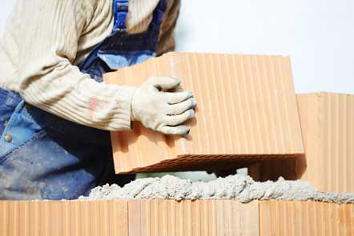
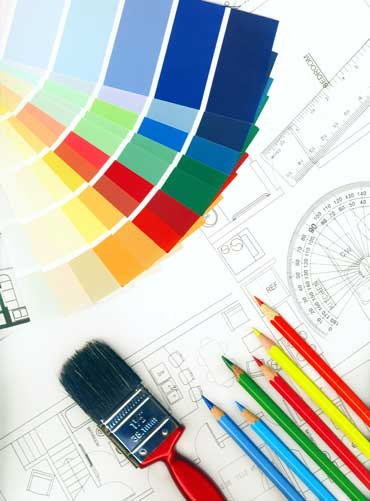
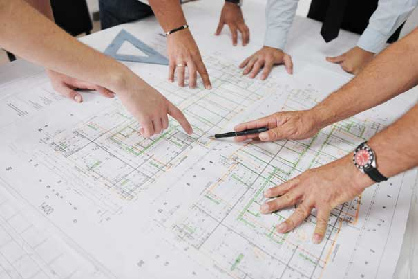

Sprint 2 - HTML & CSS DOM
6.7.2016
From the websites you visited in the practice assignment, create a list of design and structural features you liked that you may want to use in your designs next week. Think of this as a wishlist.
I really like idea of secondary expandable menu. CSS animanition like showed here CodeKit website and I really like flat design http://playgroundinc.com/ and this cool website made by Adam Rudzky
Can you think of an analogy to describe HTML, CSS and the DOM? How would you describe it to your non-technical friend?
HTML
Think about HTML as a basic of skeleton of the house. First you need build a foundation, they lay a bricks. Next will be dividing foundation into smaller rooms and choose the purpous of it.Decide where to place the windows, doors and ensure that it's placed on the right spot.
CSS
CSS more a style for the house. Choosing frames for your windows and doors, materials for it, colour even furniture. You can choose to get your furniture from top designers or do it you self.
DOM- Document Object Model
DOM is an visual representation of the house. You can see all elements of the house - different levels. You can easily target any element from your house and manipulate it.
What is meant by boxifying design?
Boxfying design means to take the website and divided it into small boxes. Everything on the website is made of boxes. Even circle is boxes with the mask made of circle. The boxfying design means - think about the website design as bunch of boxes piled on the top of each other.